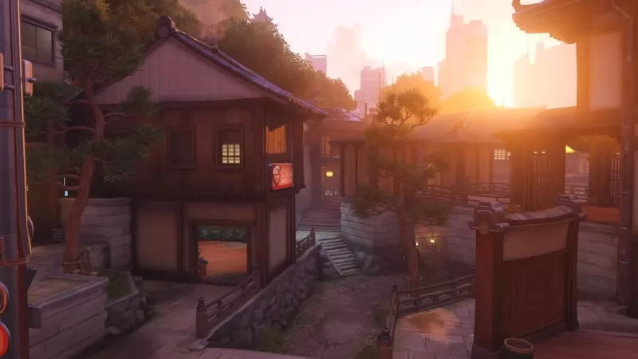

Más información de Overwatch 2 en Blizzcon en febrero según Blizzard
By Malindy Hetfeld December 17, 2020
Everything you need to know about the latest update.
During the latest Overwatch developer update video, game director Jeff Kaplan briefly mentioned that news on Overwatch 2 will be forthcoming during Blizzcon in February 2021, which will be held completely online. This is the first life sign for Overwatch 2 since the sequel's reveal back in November 2019, likely due to the coronavirus pandemic which also caused the cancelation of Blizzcon 2020.
Similarly, this is the first Overwatch development update video by Kaplan in seven months, dedicated almost entirely to the new Kanezaka map. Kanezaka is a free-for-all map, and as you can guess from the name, it's set in Japan, depicting the streets leading up to Hanamura Castle. It comes complete with one of those Toyota Pixies that can squeeze through any narrow street, and a cat cafe featuring the Overwatch team's cats.
Kanezaka came about by chance, as Kaplan explains. "We wanted to grow the team size in order to make the game that we're making, and we hired this really amazing level designer called Morton. [...] We asked him to experiment on a free-for-all Deathmatch map, and it was so good that the team wanted to bring it to full production." You can try out Kanezaka on the public test server now, and it's supposed to release for the full game at some point in early 2021.
(Image credit: Blizzard)
Kanezaka comes as a bit of a surprise to everyone, the team included, as work on Overwatch 2 is underway, so no one had planned on releasing a new map for Overwatch at all. "There's a lot of easter eggs in the map," Kaplan says, "Not only about future Overwatch lore. [...] You should really pay attention to every piece of graffiti and every location in this." Kaplan also acknowledged that the silence on Overwatch 2 has been a long one, but that work is underway, and that he's happy with all the events held in Overwatch, as well as its progress on curbing toxicity. "We still have a ways to go, just to manage expectations."
Blizzcon 2021 is scheduled to take place on February 19 and 20, 2021.